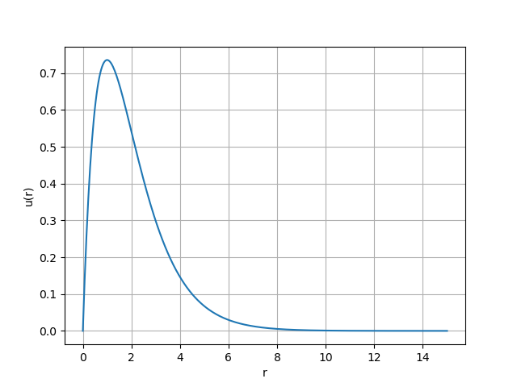
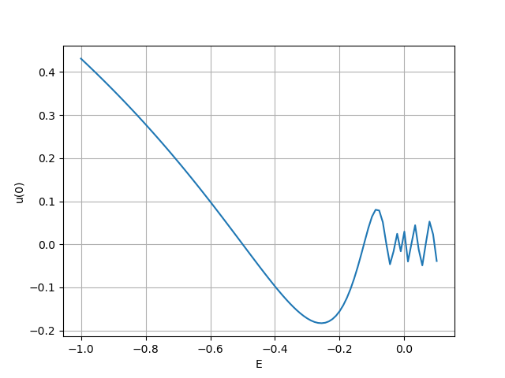
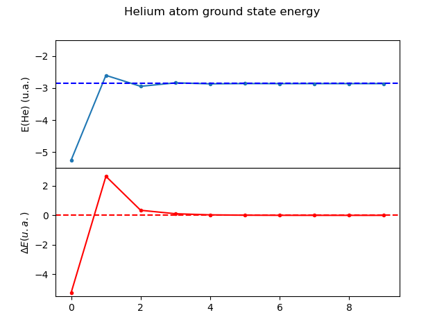
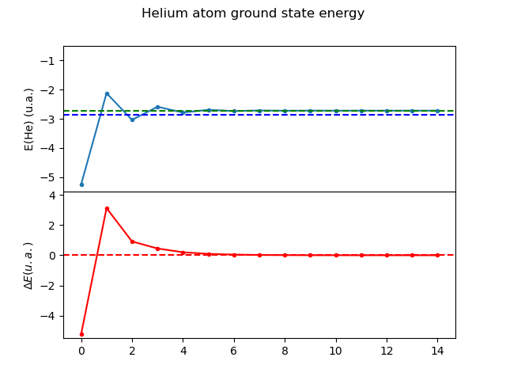

General Self-Consistent Field Methods
Table of Contents
1 Introduction
The Schrodinger equation is a certain class of Boundary Value Problem (BVP). Solution of the Schrodinger equation results in the eigenvalues(\(\lambda\)) and eigenvectors (\(\psi\)) of the Hamiltonian.
\[ \mathcal{L}\psi(x) = \lambda\psi(x) \]
These type of equations where \(\mathcal{L}\) is a second order differential operator and self-adjoint (i.e. hermitian) is called a Sturm-Liouville problem (SLP). Sturm-Liouville problems are general eigenvalues problems of the form
\[ -\frac{d}{dt}\left ( p(t) \frac{d y(t)}{dt} \right ) + q(t)y(t) = \lambda g(t)y(t) \]
posed on an interval \(-\infty \le a \le b \le \infty\) which may be finite or infinite. Such problem's arise in various fields of physics and chemistry and there exist robust and well studied numerical and analytical methods for their resolution.
In the present manuscript, we shall document numerical methods for the solution of various types of Hamiltonians and analyze their spectra and wavefunctions.
2 Hydrogen atom
We begin with the most simplest SLP which is the solution of the Hamiltonian for the hydrogen atom Eq:1
\[ \hat{H}\psi(\mathbf{x}) = \left [ -\frac{1}{2}\bigtriangleup + V \right ]\psi(\mathbf{x}) \]
This is the SLP(Eq:1) with \(p(t)=\frac{1}{2}\), and \(g(t)=1\), and \(q(t)=V\), the potential acting on the particle. The Eq:1 is in cartesian coordinates \(\mathbf{x}\) and can be transformed to spherical coordinates via a coordinate transformation.
\[ x_1 = r\sin{\theta}\cos{\phi} \] \[ x_2 = r\sin{\theta}\sin{\phi} \] \[ x_3 = r\cos{\theta} \]
In spherical coordinates, the operator \(\hat{H}\) is transformed to
\[ \hat{H} = -\frac{1}{2}\frac{1}{r^2}\frac{\partial}{\partial r} \left( r^2 \frac{\partial}{\partial r} \right) \] \[ -\frac{1}{r^2}\frac{1}{\sin{\theta}}\frac{\partial}{\partial\theta} \left(\sin{\theta}\frac{\partial}{\partial\theta} \right) \] \[ -\frac{1}{r^2}\frac{1}{\sin{\theta}^2}\frac{\partial^2}{\partial\phi^2} + V \]
We can then separate the wavefunction to three independent variables \(\psi(\mathbf{x})=R(r)\Theta(\theta)\Phi(\phi)\) to obtain three separate SLPs
\[ \left ( -\frac{1}{2}\frac{1}{r^2}\frac{\partial}{\partial r} \left( r^2 \frac{\partial}{\partial r} \right) + \frac{l(l+1)}{r^2} + V(r) \right)R(r) = \lambda R(r) \]
\[ \frac{1}{\sin{\theta}}\left (-\frac{\partial}{\partial \theta} \left( \sin{\theta} \frac{\partial}{\partial \theta} \right)+ \frac{m^2}{\sin{\theta}} \right)\Theta(\theta) = l(l+1) \] \[ \Theta(\theta)-\frac{\partial^2}{\partial \phi^2}\Phi(\phi) = m^2 \Phi(\phi) \]
With only \(r\) being the dependent variable i.e. the first equation. Here we can do a further transformation of the dependent variable \(u(r) = r R(r)\) which gives the SLP
\[ -\frac{1}{2}\frac{\partial^2 u(r)}{\partial r^2}+ q(r) u(r) = \lambda u(r) \] \[ q(r) = \frac{l(l+1)}{r^2} + V(r) \] \[ p(r) = g(r) = 1 \]
These (Eq:1) are the working equations.
2.1 Methodology
First, we transfrom Eq:1 into a set of coupled linear ODEs
\[ y = \begin{pmatrix} u \\ u' \end{pmatrix} \] \[ y' = \begin{pmatrix} u' \\ u'' \end{pmatrix} = \begin{pmatrix} u' \\ 2\left( \frac{l(l+1)}{r^2} -\frac{\mathcal{Z}}{r} - E \right) u \end{pmatrix} \]
The boundary conditions are at \(r=0\) and \(r=\infty\) with \(u(r)=0\) and \(u(\infty)=0\).
- Vector Field
import numpy as np from scipy.integrate import odeint from scipy import integrate from scipy import interpolate from scipy.optimize import root_scalar import matplotlib.pyplot as plt from copy import deepcopy def vectorfield(w, t, p): """ Defines the differential equations for the coupled spring-mass system. Arguments: w : vector of the state variables: w = [x1,y1,x2,y2] t : time p : vector of the parameters: p = [m1,m2,k1,k2,L1,L2,b1,b2] """ x1, y1 = w e1, l1, urf, tckur, _, _, _, _, z = p # Create f = (x1',y1'): f = [y1, 2*(l1*(l1+1)/(t)**2 - z/(t) - e1 + urf(t,tckur)/t)*x1 ] return f
- Solution
def solve_SLP(fn=None, tckfn=None, fnx=None, tckfnx=None, fnc=None, tckfnc=None, e1=-0.5, l1=0, z=1., t=None, numpoints=1600, stoptime=15.0, xlim=0, ylim=-1.0E-6, vectorfield=None, isWF=True): if fn is None: def fn(x,tckfn): return(0.) if fnx is None: def fnx(x,tckfnx): return(0.) if fnc is None: def fnc(x,tckfnc): return(0.) if vectorfield is None: print("[solve_SLP] Error: Have to supply a vectorfield") return(0,0,0) # Parameter values # Initial conditions # x1 and x2 are the initial displacements; y1 and y2 are the initial velocities x1 = xlim y1 = ylim # ODE solver parameters abserr = 1.0e-8 relerr = 1.0e-6 # Create the time samples for the output of the ODE solver. # I use a large number of points, only because I want to make # a plot of the solution that looks nice. if t is None: t = [stoptime * float(i+0.0001) / (numpoints - 1) for i in range(numpoints)] # Reverse the list to converge from the right t_rev = t[::-1] # Pack up the parameters and initial conditions: p = [e1, l1, fn, tckfn, fnx, tckfnx, fnc, tckfnc, z] w0 = [x1, y1] # Call the ODE solver. wsol = odeint(vectorfield, w0, t_rev, args=(p,), atol=abserr, rtol=relerr) x1 = wsol[:,0] # Reverse the result back x1 = x1[::-1] if isWF: # Normalize wavefunction norm = integrate.simps(x1**2, x=t) x1 = x1/np.sqrt(norm) tckfnout = interpolate.splrep(t,x1) def fnout(x, tck): return interpolate.splev(x, tckfnout) return(x1,fnout,tckfnout)
2.1.1 Shooting method
Here we start with \(u(\infty)=0\) and integrate towards \(r=0\). This is more stable for the convergence with respect to the Hydrogen atom.
2.1.2 Code
Main function that does the shooting.
def shoot(E, t, l=0, z=1., fn=None, tckfn=None, fnx=None, tckfnx=None, fnc=None, tckfnc=None, xlim=0, ylim=-1.E-6, vectorfield=None, isWF=True): if vectorfield is None: print("[shoot] Error: Have to supply a vectorfield") return(0,0,0,0) u,fnout,tckfnout= solve_SLP(fn=fn, tckfn=None, fnx=fnx, tckfnx=tckfnx, fnc=fnc, tckfnc=tckfnc, e1=E, l1=l, z=z, t=t, xlim=xlim, ylim=ylim, vectorfield=vectorfield, isWF=isWF) u = u/t**l # Extrapolate u to the origin r=0. return u[0] - t[0] * (u[1] - u[0])/(t[1] - t[0]), u, fnout, tckfnout
2.1.3 Plot
Plot to check results.

2.1.4 Main
Make some figures.

2.1.5 Solution of the SLP
Here we have to search for the value of \(E\)
for which the BVP has the final conditions satisfied
i.e. \(u(r)=0\). This is done using the optimization
routine from scipy.
2.1.6 Code
The code is as follows
def get_energy_and_density(l,rr,z=1.,E=None, vectorfield=None, urf=None, tckur=None, fnx=None, tckfnx=None, fnc=None, tckfnc=None, xlim=0., ylim=-1.0E-6, isWF=True): dE = 0.51 # scan resolution to look for sign changes if E is None: E = -1.0 # starting energy if vectorfield is None: print("[get_energy_and_density] Error have to supply a vectorfield") return(0) if urf is None: def urf(x,tckur): return(0) def fn(e): u0s = shoot(e, rr, l=l, z=z, fn=urf, tckfn=tckur, fnx=fnx, tckfnx=tckfnx, fnc=fnc, tckfnc=tckfnc, vectorfield=vectorfield, xlim=xlim, ylim=ylim, isWF=isWF)[0] return(u0s) E_bound = root_scalar(fn, x0=E-dE, x1=E+dE).root _,u_bound,nrf,tck = shoot(E_bound, rr, l=l, z=z, fn=urf, fnx=fnx, tckfnx=tckfnx, fnc=fnc, tckfnc=tckfnc, tckfn=tckur, vectorfield=vectorfield, xlim=xlim, ylim=ylim, isWF=isWF) return(E_bound, u_bound, nrf, tck)
2.1.7 Testing
Test the functions.
import sys # the mock-0.3.1 dir contains testcase.py, testutils.py & mock.py sys.path.append('/home/runner/work/gscf/gscf/src') sys.path.append('/home/runner/work/gscf/gscf') import numpy as np from src.hydrogen import get_energy_and_density, vectorfield def test_hydrogen(numpoints=3200, stoptime=60): rr = np.array([stoptime * float(i+0.0001) / (numpoints - 1) for i in range(numpoints)]) E_bound,_,_,_ = get_energy_and_density(0,rr,vectorfield=vectorfield) abs(E_bound - 0.5) <= 1.0E-10
2.1.8 Main
Make figures.
3 Helium atom
Here we need to include the Hartree potential \(V_H\) which is the repulsion between the two electrons
\[ V_H(\mathbf{r}) = \int dr'^3 n(\mathbf{r}')\frac{1}{\mathbf{r}-\mathbf{r}'} \]
Where the \(n(\mathbf{r})\) is the density which is given as
\[ n(\mathbf{r}) = 2\sum_i^{N_{occ}} |\psi(\mathbf{r})|^2 \]
where we assume a closed shell spin singlet slater determinant. In order to get the radial part of the density, we can use the radial part of the wavefunction \(\psi(\mathbf{r})\) which is \(R(\mathbf{r})\).
\begin{align*} n(r) &= 2\sum_i^{N_{occ}} |R(r)|^2 \\ n(r) &= 2\sum_i^{N_{occ}} \left |\frac{u(r)}{r}\right|^2 \\ \end{align*}3.1 Poisson equation
In order to calculate the Hartree potential Eq:1, we shall transform it into an SLP which we can again solve using the above methodology the solution of the Hydrogen atom.
\[ \nabla^2 V_H(\mathbf{r}) = -4 \pi n(\mathbf{r}) \]
This can again be transformed using the variable substitution \(u(r)=rR(r)\) to a 1D equation.
\[ \frac{\partial^2 U(r)}{\partial r} = -4\pi r n(r) \]
The fact that \(n(r)\) is simply \(R(r)^2\) by definition and the fact that \(u(r)\) is normalized we can drop off \(4\pi\) to finally obtain
\[ U''(r) = -\frac{u(r)^2}{r} \]
This is the SLP that we need to solve to obtain the hartree potential \(V_H(r)\).
3.2 Solution
The BVP Eq:1 takes the following boundary conditions
\begin{align*} U(0) &= 0\\ U(r_{max}) &= q_{max} \end{align*}where, \(q_{max}\) is the total charge. We shall use these conditions in the shooting method to find the correct Hartree potential.
\[ q_{max} = \int_0^{max} \text{d}r\ u^2(r) \]
3.2.1 Vector Field
import numpy as np from scipy.integrate import odeint from scipy import integrate from scipy import interpolate from scipy.optimize import root_scalar import matplotlib.pyplot as plt from copy import deepcopy def vectorfieldVH(w, t, p): """ Defines the differential equations for the coupled spring-mass system. Arguments: w : vector of the state variables: w = [x1,y1,x2,y2] t : time p : vector of the parameters: p = [m1,m2,k1,k2,L1,L2,b1,b2] """ x1, y1 = w _, _, nrf, tck,_,_,_,_, z = p # Create f = (x1',y1'): f = [y1, -nrf(t,tck)*nrf(t,tck)/t ] return f
3.2.2 Testing
numpoints=400 stoptime=15.0 rr = np.array([stoptime * float(i+0.0001) / (numpoints - 1) for i in range(numpoints)]) qmax = 1. xlim = qmax ylim = 0 x1,urf,tckur = solve_SLP(fn=nrf, tckfn=tck, t=rr, xlim=xlim, ylim=ylim, vectorfield=vectorfieldVH)
3.2.3 Main
3.3 Self-consistent field cycle
In order to find the solution, we need to perform a SCF loop so that the energy stays constant.
In order to calculate the total energy, we now also need to incorporate the Hartee potential
\[ E = 2 \epsilon - \int \text{d}r\ V_H(r) u^2(r) \]
3.3.1 Vector Field
def vectorfieldHe(w, t, p): """ Defines the differential equations for the coupled spring-mass system. Arguments: w : vector of the state variables: w = [x1,y1,x2,y2] t : time p : vector of the parameters: p = [m1,m2,k1,k2,L1,L2,b1,b2] """ x1, y1 = w e1, l1, urf, tckur, z = p # Create f = (x1',y1'): f = [y1, 2*(l1*(l1+1)/(t)**2 - z/t - e1 + urf(t,tckur)/t)*x1 ] return f
3.3.2 Calculate energy
def calcEnergy(ei,urf,tckur,nrf,tck,t=None,stoptime=60.0,numpoints=3200): E = 2*ei if t is None: t = [stoptime * float(i+0.0001) / (numpoints - 1) for i in range(numpoints)] h = t[1]-t[0] VHl = np.array([urf(x,tckur)/x for x in t]) Nr2 = np.array([(nrf(x,tck))**2 for x in t]) eH = integrate.simps(VHl*Nr2, x=t) print(eH) E = E - eH return(E)
3.3.3 SCF cycle code
stoptime=60.0 numpoints=3200 rr = np.array([stoptime * float(i+0.0001) / (numpoints - 1) for i in range(numpoints)]) # Get initial density E_bound,_,nrf,tck = get_energy_and_density(0,rr,z=2.,E=-1.50,vectorfield=vectorfield) # Get initial ur qmax = 1. xlim = qmax ylim = 0. x1,urf,tckur = solve_SLP(fn=nrf, tckfn=tck, t=rr, xlim=xlim, ylim=ylim, vectorfield=vectorfieldVH, isWF=False) E0 = calcEnergy(E_bound, urf, tckur, nrf, tck) print(E_bound, E0) E_conv = [] dE_conv = [] E_conv.append(E0) dE_conv.append(E0) cnt = 0 Ediff = 10. while cnt < 9 and abs(Ediff) > 1.E-4: # Get density E_bound,_,nrf,tck = get_energy_and_density(0,rr,z=2.,E=-1.50,vectorfield=vectorfield, urf=urf, tckur=tckur) # Get ur x1,urf,tckur = solve_SLP(fn=nrf, tckfn=tck, t=rr, xlim=xlim, ylim=ylim, vectorfield=vectorfieldVH, isWF=False) E1 = calcEnergy(E_bound, urf, tckur, nrf, tck,t=rr) #E1 = E_bound E_conv.append(E1) Ediff = abs(E0-E1) dE_conv.append(Ediff) print(f"Iter : {cnt} E = {E1} Diff = {Ediff} E_bound={E_bound}") E0 = E1 cnt += 1
3.3.4 Main
/tmp/babel-DzBZdg/python-LzHa4M
3.4 Figure

3.5 The local density Exchange potential
The Hartree potential used above is not the full potential since we have substracted half of the electron density to take into account the self-energy correction. However, if we take the actual Hartree potential into account, the energy obtained is very far from the exact energy.
In order to correct for this self interaction energy, we can use the local density exchange potential (LDA). A simple functional based on the electron gas is given as
\[ V_{\text{x}}(\mathbf{r}) = -\left( \frac{3}{\pi} \right )^{1/3} \times n^{1/3}(\mathbf{r}) \]
This potential is defined as the partial derivative of the exchange energy
\[ V_{\text{x}}[n](\mathbf{r}) = \frac{\partial}{\partial n (\mathbf{r})}E_{x}[n] \]
And the exchange energy is given as
\[ E_{x}[n] = \int \text{d}^3 r \epsilon_{x}[n(\mathbf{r})]n(\mathbf{r}) \]
where the exchange energy density is given as
\[ \epsilon_{x}[n(\mathbf{r})] = -(3/4)(3/\pi)^{1/3} \times n^{1/3}(\mathbf{r}) \]
The local density exchange potential is derived from this local energy density expression.
This local density based potential can correct for part of the self-energy error in the Hartree potential. Note that here, and for the calculation for the Hartree potential, the full density is to be taken. We can again write this in terms of the radial function as
\[ V_{\text{x}}(\mathbf{r}) = -\left[ \frac{3u^2(r)}{2\pi^2r^2} \right ]^{1/3} \]
and, using the above exchange energy, the total energy can then be written as
\[ E = 2 \epsilon - \int \text{d}r\ V_H(r) u^2(r) + \frac{1}{2}\int \text{d}r\ V_{\text{x}}(r)u^2(r) \]
The full equation the reads
\begin{align*} \label{org72d8219} y &= \begin{pmatrix} u \\ u' \end{pmatrix}\\ y' &= \begin{pmatrix} u' \\ u'' \end{pmatrix} = \begin{pmatrix} u' \\ 2\left( \frac{l(l+1)}{r^2} -\frac{\mathcal{Z}}{r} + V_H + V_{\text{x}} - E \right) u \end{pmatrix}\\ \end{align*}3.5.1 Vector Field
def vectorfieldX(w, t, p): """ Defines the differential equations for the coupled spring-mass system. Arguments: w : vector of the state variables: w = [x1,y1,x2,y2] t : time p : vector of the parameters: p = [m1,m2,k1,k2,L1,L2,b1,b2] """ x1, y1 = w e1, l1, urf, tckur, uxrf, tckurx, nrf, tck, z = p # Create f = (x1',y1'): f = [y1, 2*(l1*(l1+1)/(t)**2 - z/(t) - e1 + 2*urf(t,tckur)/t + uxrf(t,nrf,tck) )*x1 ] return f
3.5.2 Calculate energy
def calcEnergyVx(ei,urf,tckur,urxf,tckurx,nrf,tck,t=None,stoptime=60.0,numpoints=3200): E = 2*ei if t is None: t = [stoptime * float(i+0.0001) / (numpoints - 1) for i in range(numpoints)] VHl = np.array([urf(x,tckur)/x for x in t]) Vxl = np.array([urxf(x,nrf,tck) for x in t]) ur2 = np.array([(nrf(x,tck))**2 for x in t]) eH = integrate.simps(VHl*ur2, x=t) ex = integrate.simps(Vxl*ur2, x=t) print((eH, (ex/2))) E = E - eH + (ex/2) return(E)
3.5.3 SCF cycle code
stoptime=60.0 numpoints=3200 rr = np.array([stoptime * float(i+0.0001) / (numpoints - 1) for i in range(numpoints)]) # Get initial density E_bound,_,nrf,tck = get_energy_and_density(0,rr,z=2.,E=-2.50,vectorfield=vectorfield) # Get initial ur qmax = 1. xlim = qmax ylim = 0. x1,urf,tckur = solve_SLP(fn=nrf, tckfn=tck, t=rr, xlim=xlim, ylim=ylim, vectorfield=vectorfieldVH, isWF=False) E0 = calcEnergy(E_bound, urf, tckur, nrf, tck) print(E_bound, E0) def urxf(x,nrf,tck): numer = 3.*nrf(x,tck)*nrf(x,tck) denom = 2.*np.pi*np.pi*x*x return(-np.power(numer/denom,1/3)) E_conv = [] dE_conv = [] E_conv.append(E0) dE_conv.append(E0) cnt = 0 Ediff = 10. while cnt < 30 and abs(Ediff) > 1.E-4: # Get density E_bound,_,nrf,tck = get_energy_and_density(0,rr,z=2.,E=-1.00,vectorfield=vectorfieldX, urf=urf, tckur=tckur, fnx=urxf, tckfnx=tckur, fnc=nrf, tckfnc=tck) # Get ur x1,urf,tckur = solve_SLP(fn=nrf, tckfn=tck, t=rr, xlim=xlim, ylim=ylim, vectorfield=vectorfieldVH, isWF=False) E1 = calcEnergyVx(E_bound, urf, tckur, urxf, tckur, nrf, tck, t=rr) #E1 = E_bound E_conv.append(E1) Ediff = abs(E0-E1) dE_conv.append(Ediff) print(f"Iter : {cnt} E = {E1} Diff = {Ediff} E_bound={E_bound}") E0 = E1 cnt += 1
3.5.4 Main Shoot

3.5.5 Main

3.6 Figure
